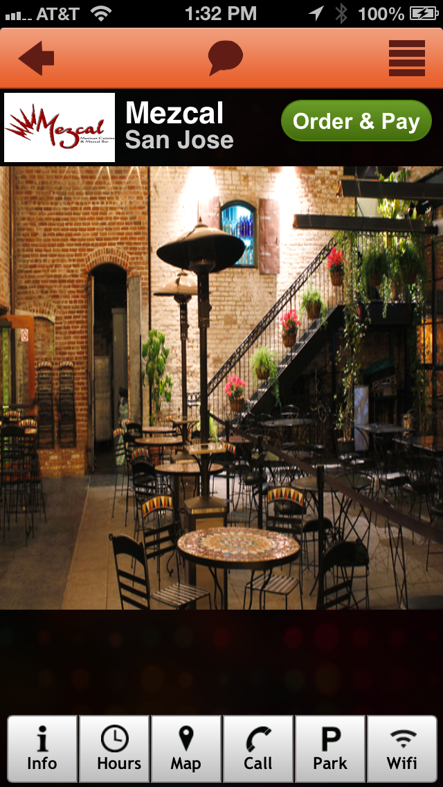
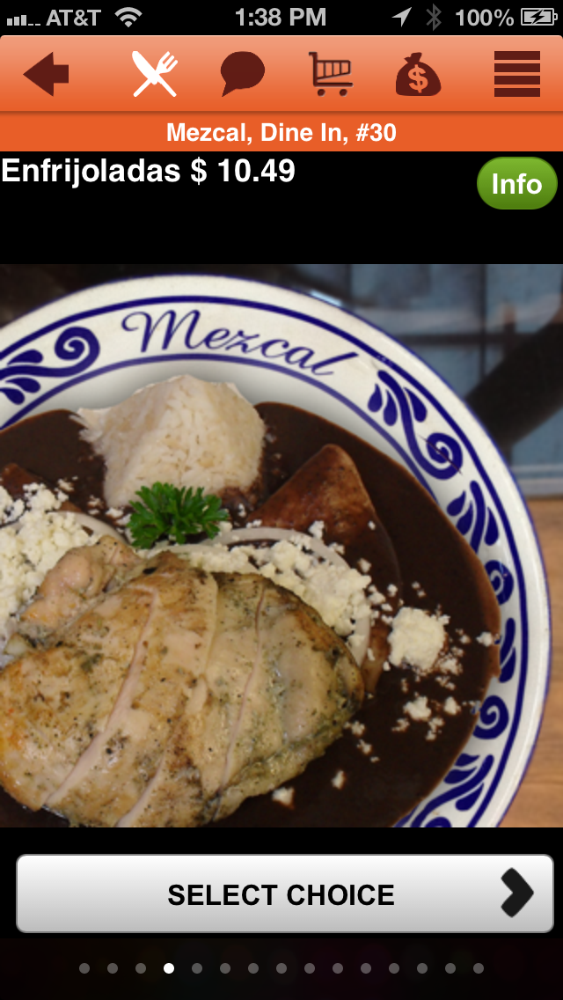
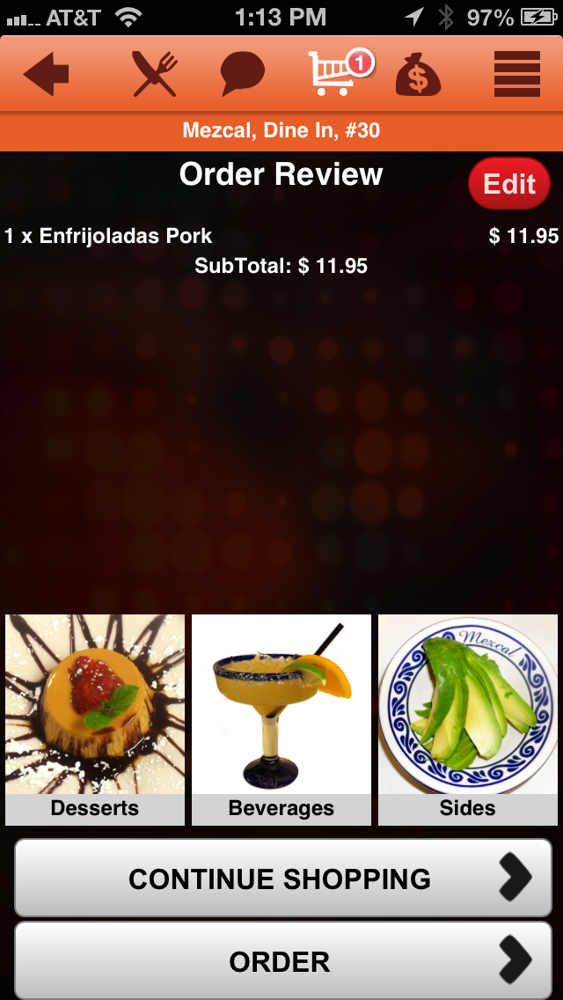
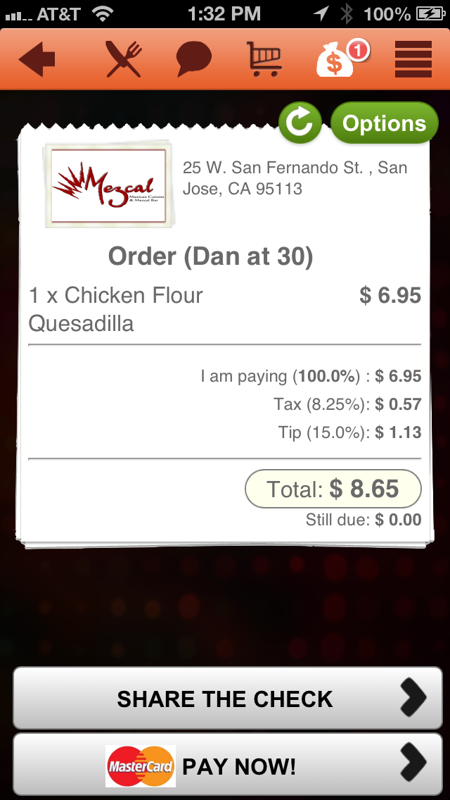
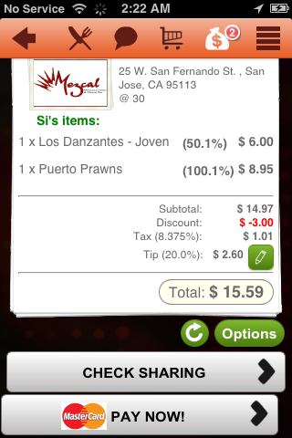

Restaurant home
The restaurant landing — Order & Pay entry point.
{kind=link}

iOS · PHP / Symfony2 · AWS · 2011–2013
MoWaiter was a smartphone dine-in product I co-founded: guests browsed the menu with photos, ordered, split the check, and paid from their phone — and messaged the waiter without flagging anyone down. I was CTO / architect / developer and built the entire stack: the iOS app, the back end, and the infrastructure.
Archival project — the company wound down in 2013. Kept here as founder track record: product built from zero, deployed in real restaurants, operated in production.
Co-founded in 2011 in Sunnyvale, years before table QR-ordering became normal. We ran the full product process — Balsamiq wireframes, InVision flows, test plans, a real sales pipeline — and deployed to paying restaurants in the San Jose area, where it processed real dine-in orders. The company wound down in 2013; the lesson inventory (distribution beats product polish in restaurant tech) came with it. I went on to TrialPay, and the end-to-end ownership habit — product, code, infra, operations — never left.
From the live app in 2013, running at a San Jose restaurant — recovered from the original launch-era archives.
The restaurant landing — Order & Pay entry point.

Menu item with dish photo and ordering controls.

Order review with the category carousel.

Receipt with "Share the Check / Pay Now".

Percentage split across the table, settled per guest.

{kind=link}
{kind=link}
{kind=link}
{kind=link}